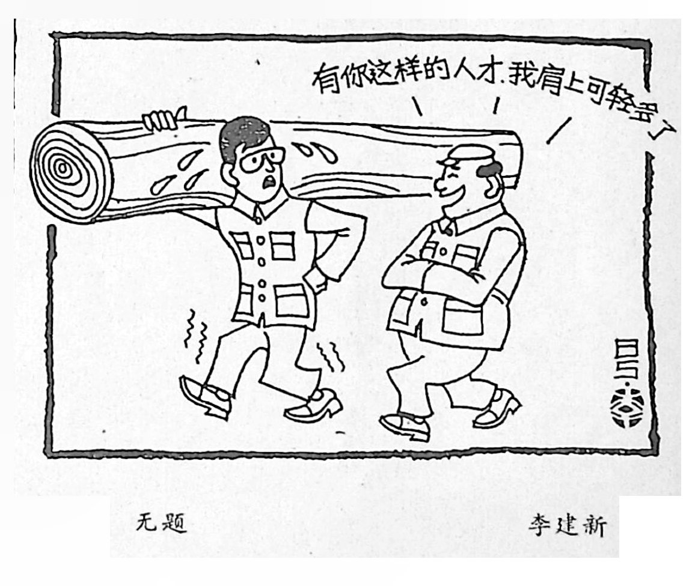

李建新 《人事》1985年第1期（总第1期），封三
无题
Untitled
- Text in the drawing
- 有你这样的人才，我肩上可轻多了
With talent like you around, my shoulders feel much lighter - Description
- A sweating young man in glasses staggers under an enormous log while the cadre beside him strolls along, arms folded, beaming.
- Artist
- Li Jianxin 李建新
- Published in
- 《人事》1985年第1期（总第1期）, inside back cover
- Themes
- Talent and its neglect · Bureaucratism

Cite
Li Jianxin, “无题” [Untitled], Renshi (Personnel) 《人事》, 1985, no. 1, inside back cover.